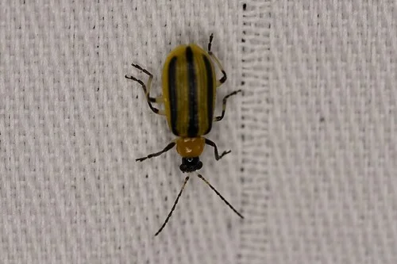

怎样辨认条纹黄瓜叶甲
照片是白布上的一只成虫，不是被咬的瓜苗，也不是花里的虫群。黄色鞘翅上有三道深色纵纹。

现场检查
对照这只成虫看田间的虫：身体偏长，鞘翅黄底，三道纵纹从头后一直延伸到翅端，头是深色的。只有在瓜叶或瓜花里看到同样的条纹，才把虫和受害部位记在一起。
鉴别相似表现
瓜类上还有鞘翅带斑点的叶甲，斑点不是三条纵纹。只看见圆孔、当天没有看到甲虫时，先不要把孔归到这一条。
处理选择
苗还小、叶已经穿孔时，先把眼前这只条纹成虫捉走，并记下是哪一株。没有看到成虫之前，不要按想象中的虫群处理整畦。
后续复查
开花后再拨开花瓣看一次。花里的条纹甲虫和苗期叶片上的孔要分开写，两者可以同时存在。
寄主检查要点
只在黄瓜、南瓜一类瓜苗或瓜花上使用这一条。其他作物上的黄色甲虫，先数清纵纹是不是同样的三道。
撤苗罩前记录几株苗的健康叶数，撤罩后复查同一批。一棵小苗的子叶被咬掉大半，比旺盛开花藤上零散的几处咬痕更需及时处理。